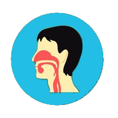

What Are The Dangers Of Cinnamaldehyde?
Beside the benefits of Cinnamaldehyde, this coumpound also have some dangers, such as causes allergies and respiratory problems. This dengers will be happend if you are consumed this compunds with large quantities
 Cinnamon contains cinnamaldehyde. The content of cinnamaldehyde compounds can trigger allergic reactions and irritation in the tissues in the mouth and lips when consumed in large quantities. The most common symptoms of cinnamaldehyde compound allergies include swelling of the tongue or gums, burning sensation, itching and white patches in the mouth. The condition is not a serious symptom, but can cause a sense of discomfort if not treated immediately. In many cases, people with allergies are caused by consuming cinnamon flavored candies, since they generally contain more cinnamaldehyde compounds.
Cinnamon contains cinnamaldehyde. The content of cinnamaldehyde compounds can trigger allergic reactions and irritation in the tissues in the mouth and lips when consumed in large quantities. The most common symptoms of cinnamaldehyde compound allergies include swelling of the tongue or gums, burning sensation, itching and white patches in the mouth. The condition is not a serious symptom, but can cause a sense of discomfort if not treated immediately. In many cases, people with allergies are caused by consuming cinnamon flavored candies, since they generally contain more cinnamaldehyde compounds.
In addition to the mouth and lips, your skin can also experience irritation and redness when applying this spice oil directly on the skin. Cinnamaldehyde, 5% in petrolatum, is a skin irritant. Prolonged contact with cinnamon oil on skin may cause burns.However, it is important to note that cinnamaldehyde compounds will only cause allergies or irritations if you previously had an allergy to the compound.
 The cinnamaldehyde compound in cinnamon is also irritant to the throat so it can cause more serious respiratory problems. Because, eating too much cinnamon powder in one bite can cause respiratory problems because it has a very fine texture so it is easy to inhale. That is why, when you intentionally or unintentionally inhale it can cause coughing, choking, and even difficulty breathing. Persons who have asthma or other medical conditions related to the respiratory system need to be specifically monitored if they are intentional or not, inhale these spice powders. The reason, they tend to be more susceptible to respiratory problems.
So can we eat cinnamon? How much is still safe? Then how much cinnamon is allowed for consumption? Actually, cinnamon is proven safe to eat and many studies that show its benefits for health.However, it should be noted about the amount of coumarin consumed in one day. The daily allowable intake is 0.1 mg per kg body .weight. This is equivalent to 1 teaspoon of Cassia type cinnamon or 2.5 teaspoons of Ceylon cinnamon.